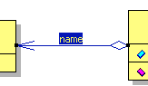

Was ist eine Aggregation? |
|
Was ist eine Aggregation eigentlich?Eine Aggregation ist eine spezialisierte Form der Assoziation.
Wird ein Objekt der Anfangsklasse, z.B. PipiLangstrumpf, erzeugt,
so bekommt sie eine Referenz auf ein Objekt der Endeklasse mit.
Man sagt hier auch: Die Anfangsklasse "hat" die
Endeklasse. Diese hat-Beziehung ist einseitig. Die Anfangsklasse
kennt die Endeklasse, umgekehrt ist dies jedoch nicht der
Fall.
|
Wie sieht so eine
Aggregation denn in Jumli aus?
|
|
|
 |
Eine Aggregation wird wie eine Assoziation als Linie zwischen den Klassen dargestellt, die auf der Seite der Anfangsklasse mit einer kleinen, nicht ausgefüllten Raute versehen wird. Im Übrigen gelten die Notationskonventionen einer normalen Assoziation. |
|
Zurück zur UML Übersicht |
|
Zurück zur Startseite |
|